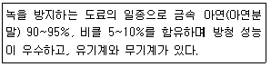
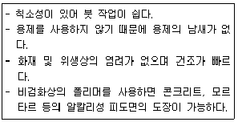
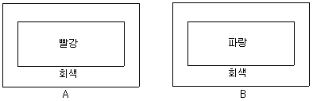

금속도장기능사 (2016-01-24 기출문제)
1과목: 색채
1. 보기에서 설명한 특수 도료는 무엇인가?

- 선저 도료
- 징크리치 페인트
- 하이빌드 도료
- 스트리퍼블 페인트
(정답률: 75%)

2. 래커 프라이머 특성에 관한 설명으로 틀린 것은?
- 내후성이 좋다.
- 건조성이 좋다.
- 부착성이 떨어진다.
- 래커를 전색제로 사용한 프라이머이다.
(정답률: 59%)
3. 에멀션탈지의 특징을 설명한 것으로 틀린 것은?
- 냉수로는 완전히 세정이 불가능하다.
- 탈지력은 중간 정도로 때가 많은 것은 제거하기 어렵다.
- 알카리 세척제를 가열하여 유지를 제거하는데 사용한다.
- 탈지가 끝난 뒤에는 온수로 씻어 남은 유화제나 때를 제거한다.
(정답률: 50%)
4. 도장 시 용제가 증발하며 주위에 습기를 흡수하여 도막에 안개 낀 것 같은 모양이 발생하는 것을 방지하기 위한 대책이 아닌 것은?
- 전처리를 충분히 한다.
- 지건성 신너를 사용한다.
- 피도면을 예열하여 습기를 제거한다.
- 습도가 높은 상황에서 작업하지 않는다.
(정답률: 59%)
5. 주로 방청을 목적으로 사용되는 도료는?
- 수성페인트 도료
- 합성수지 도료
- 에나멜 도료
- 광명단 도료
(정답률: 56%)
6. 도장에서 콤파운드의 사용 용도로 옳은 것은?
- 탈지
- 광택
- 샌딩
- 박리
(정답률: 67%)
7. 백색 안료가 아닌 것은?
- 리토폰
- 아연화
- 백색티탄
- 산화크롬
(정답률: 60%)
8. 내산 및 내열성을 현저히 증대시키며 보일러, 요업 등의 부품으로 사용하는 것은?
- 알루미늄 주철
- 티탄 주철
- 합금 주철
- 니켈 주철
(정답률: 55%)
9. 도료용 안료가 갖추어야 할 특성이 아닌 것은?
- 분산성이 없을 것
- 독성이 없을 것
- 은폐력, 착색력이 좋을 것
- 내광성, 내후성, 내수성, 내용제성이 좋을 것
(정답률: 75%)
10. 철강의 산세에 사용하는 산의 종류 중 산화물을 용해시키는 능력이 크고 산세 속도가 빠른 것은?
- 염산
- 황산
- 인산
- 질산
(정답률: 44%)
11. 도료에 사용되는 합성수지 중 열경화성 수지가 아닌 것은?
- 스티롤수지
- 멜라민수지
- 폴리우레탄수지
- 에폭시수지
(정답률: 40%)
12. 유성도료의 특징이 아닌 것은?
- 건조 시간이 빠르다.
- 도장이 용이하며 특히 붓 작업이 쉽다.
- 피도장물과의 부착성이 좋다.
- 도료의 휘발성이 적어 도막의 살오름이 좋다.
(정답률: 56%)
13. 보일류와 안료를 혼합하여 만든 도료는?
- 주정 도료
- 유성 페인트
- 에멀션 도료
- 비닐수지 도료
(정답률: 37%)
14. 용제에 대한 설명으로 틀린 것은?
- 비점이 150℃ 이상인 것을 고비점 용제라 한다.
- 비점이 100℃ 이하인 것을 저비점 용제라 한다.
- 전용제를 단독 사용해선 수지를 용해하기 어렵다.
- 희석제를 첨가하여 도료의 점도를 조절할 수 있다.
(정답률: 60%)
15. 피도물의 재료 중 알루미늄에 관한 설명으로 틀린 것은?
- 은백색의 경금속으로 전기 전도도가 좋다.
- 전연성이 좋으며 판으로 용이하게 가공할 수 있다.
- 도료의 밀착성이 매우 좋아 전처리가 필요 없다.
- 이온화 경향이 커서 표면이 산화되기 쉽다.
(정답률: 57%)
16. 금속 또는 비철금속 표면에 있는 유지류를 제거할 목적으로 사용하는 것은?
- 박리제
- 탈지제
- 첨가제
- 중화제
(정답률: 70%)
17. 이산화티타늄(TiO2)으로 코팅된 운모조각으로 이루어진 안료이며, 도막에 진주와 같은 느낌을 주는 것은?
- 방청안료
- 체질안료
- 마이카안료
- 메탈릭안료
(정답률: 39%)
18. 전기적 기능을 가진 도료가 아닌 것은?
- 전계완화도료
- 대전방지도료
- 전파흡수도료
- 탄성외장도료
(정답률: 74%)
19. 안정장비인 보호구에 해당되지 않는 것은?
- 방독마스크
- 스틸 울
- 보안면
- 보안경
(정답률: 73%)
20. 붓에 주로 많이 사용되는 재료와의 연결이 틀린 것은?
- 페인트 붓-말털, 돼지털
- 바니시 붓-말털, 양털
- 래커 붓-돼지털
- 수성 붓-양털
(정답률: 55%)
2과목: 금속도장재료
21. 균열현상(갈라짐)의 원인 중 틀린 것은?
- 약한 하도에 용해력이 강한 상도 도장을 할 경우
- 하도 건조가 불충분할 때 상도 도장을 할 경우
- 거친 사포로 연마작업을 할 경우
- 건조 목재가 수분을 함유하고 있거나 팽창 계수가 큰 금속에 도장을 할 경우
(정답률: 63%)
22. 롤러 브러시 도장의 특징으로 틀린 것은?
- 면적이 넓은 평면도장에 능률적이다.
- 도장작업의 시간이 단축된다.
- 주위 환경을 오염시키지 않는다.
- 높고, 구석진 부분도 칠하기 쉽다.
(정답률: 56%)
23. 에어 트랜스포머에 대한 설명으로 틀린 것은?
- 교반 날개에 의해 도료를 교반하여 항상 균일한 도료를 사용하기 위해 필요하다.
- 에어를 임의의 압력으로 조절하고 또 압축 공기 중의 수분, 유분 등의 오물을 제거한다.
- 스프레이건의 가까운 곳에 트랜스포머를 설치하는 것이 좋다.
- 에어 프랜스포머는 공기 청정부, 공기 감압밸브, 압력게이지 등으로 구성된다.
(정답률: 47%)
24. 미스트(mist) 도료의 설명으로 옳은 것은?
- 건을 통해 분무된 도료가 피도물에 도착되지 않고 상당량이 무화되어 도료 입자가 흩어지는 것을 말한다.
- 알코올계 용제애 수지류를 용해하여 용제 휘발에 의해 도막을 형성하는 도료를 말한다.
- 도료가 유기 용제를 포함하고 있지 않는 도료를 말한다.
- 수용성 무용제형 도료를 말한다.
(정답률: 48%)
25. 흡상식 스프레이 건으로 도장 작업 중 조절할 수 없는 것은?
- 도료 토출량 조절
- 공기랍력 조절
- 도료 패턴 조절
- 건의 노즐 조절
(정답률: 59%)
26. 보기와 같은 특성을 가진 도료는?

- 비닐수지 도료
- 비닐졸 도료
- 에멀션 도료
- 주정 도료
(정답률: 42%)
27. 도장 전기기기설비 화재 진화에 가장 좋은 방법은?
- 물로 진화한다.
- 건조한 모래살포로 진화한다.
- 이불 및 거적 등을 사용하여 진화한다.
- 이산화탄소 및 할로겐화합물 소화기로 진화한다.
(정답률: 71%)
28. 용제 취급 중 용제가 피부에 묻었을 때의 조치로 가장 좋은 방법은?
- 비눗물로 씻는다.
- 그대로 건조 시킨다.
- 다른 용제로 씻는다.
- 크림을 바른다.
(정답률: 70%)
29. 등유(Kerosene)의 인화점으로 옳은 것은?
- 0~10℃
- 11~20℃
- 21~70℃
- 71~100℃
(정답률: 49%)
30. 스프레이건을 사용하여 도장할 때의 설명으로 틀린 것은?
- 피도장물과 스프레이건의 거리가 멀면 도막이 처진다.
- 스프레이건은 도장면과 수직이 되도록 하고 평행하게 움직여야 한다.
- 소형 스프레이건으로 작업할 때, 일반적으로 도장 간격은 15~20cm가 적당하다.
- 스프레이건의 방아쇠는 2단으로 되어 있어, 1단에서 공기만 나오고, 2단 에서는 도료가 분출된다.
(정답률: 67%)
31. 하도용 도료 중 티탄 화이트, 무수규산 등을 안료로 사용하는 것은?
- 아미노 알키트 퍼티
- 폴리에스테르 퍼티
- 래커 퍼티
- 오일 퍼티
(정답률: 43%)
32. 유기용제의 위험성과 가장 관계가 없는 것은?
- 인화점
- 폭발한계
- 발화점
- 비중
(정답률: 62%)
33. 탈지방법에 속하지 않는 것은?
- 에멀션
- 알칼리
- 용제
- 정전기
(정답률: 63%)
34. 유출식 점도계가 아닌 것은?
- 스토머 점도계
- 레드우드 점도계
- 포드컵 점도계
- 오스왈드 점도계
(정답률: 46%)
35. 중도 도장의 목적이 아닌 것은?
- 금속면의 방청
- 피도면의 평활성 부여
- 하도와 상도간의 밀착성 부여
- 퍼티의 상도흡수 방치로 인해 광택저하 방지
(정답률: 45%)
36. 건식 부스의 특징을 설명한 것으로 틀린 것은?
- 도착 효율이 높다.
- 페수처리 설비가 필요 없다.
- 구조가 간단하고 소량의 도장에 유리하다.
- 연속적으로 많은 양을 도장할 수 있다.
(정답률: 43%)
37. 도장작업 도중이나 건조 과정에서 발생하는 결함이 아닌 것은?
- 백악화
- 오랜지 필
- 블리딩
- 분화구
(정답률: 35%)
38. 일반적인 도장의 공정별 순서로 옳은 것은?
- 바탕조정→하도→퍼티 및 연마→중도→상도→광택
- 퍼티 및 연마→하도→바탕조정→중도→상도→광택
- 퍼티 및 연마→바탕조정→하도→중도→상도→광택
- 하도→바탕조정→퍼티 및 연마→중도→상도→광택
(정답률: 45%)
39. 쇼트 블라스트 작업의 설명으로 틀린 것은?
- 작업 비용이 저렴하다.
- 일반적으로 원심력 투사법이 사용된다.
- 처리 속도가 빠르나 분진의 비산이 있다.
- 탈청 효과가 높고 대량 처리가 가능하다.
(정답률: 27%)
40. 조작이 간단하여 투명 도료나 수지 용액의 점측정에 사용되는 것은?
- 모세관 점도계
- 기포 점도계
- 스토머 점도계
- B형 점도계
(정답률: 38%)
3과목: 금속도장
41. 오일 퍼티에 관한 설명 중 틀린 것은?
- 사용 전색제는 유성 바니시 등을 사용한다.
- 사용 안료는 제질안료, 아연화 등이 있다.
- 오일 퍼티의 두께는 0.2~0.4mm 정도가 표준이다.
- 내후성은 좋으나 부착성이 좋지 않다.
(정답률: 45%)
42. 휘발건조형 도료는 무엇인가?
- 불포화 폴리에스테르 수지도료
- 고형에폭시 수지도료
- 고형폴리에틸렌 도료
- 래커비닐수지 도료
(정답률: 43%)
43. 도장 작업 후 도막에 밀감 껍질 모양의 요철이 발생한 결함은?
- 곰보 자국
- 핀홀
- 오렌지 필
- 기포
(정답률: 73%)
44. 불포화 폴리에스테르 수지 도료의 설명으로 틀린 것은?
- 정화될 때 체적 수축이 크고 부착성이 좋지 못하다.
- 도막은 유연성이 좋고 내후성이 뛰어나다.
- 무용제형 도료이기 때문에 1회 도장으로 두꺼운 도막을 얻을 수 있다.
- 주로 목재 도장 및 퍼티로 이용되고 FRP, 탱크 라이닝용 등으로 이용되기도 한다.
(정답률: 39%)
45. 숩식부스의 워터 커튼으로 사용하지 않는 것은?
- 아연판
- 알루미늄판
- 강철판
- 스테인리스판
(정답률: 50%)
46. 메탈릭 도장을 두껍게 도포하면 은분이 자유로이 운동하여 금속분이 무늬를 만들어 외관상 얼룩이 발생하는데, 이를 방지하는 방법으로 틀린 것은?
- 규정된 점도로 작업한다.
- 건의 운행 속도를 느리게 한다.
- 피도면과의 거리를 멀리하여 도장한다.
- 규정된 신나를 사용하여 배합 비율을 맞춘다.
(정답률: 54%)
47. 다음 탈지제 중 알칼리 세척제가 아닌 것은?
- 수산화나트륨
- 탄산나트륨
- 염화나트륨
- 산인산나트륨
(정답률: 38%)
48. 열풍대류 건조 장치의 설명으로 틀린 것은?
- 열 공기를 매체로 한다.
- 직접 가열식과 간접 가열식이 있다.
- 중유, 경유 등 액체 연료만 사용한다.
- 전도 및 대류 현상을 응용한 건조 장치이다.
(정답률: 65%)
49. 눈의 망막에 대한 설명 중 틀린 것은?
- 안구벽은 섬유막, 혈관막, 신경막의 세 겹의 막으로 이루어져 있다.
- 망막은 얇고 투명한 막으로 카메라의 조리개와 같은 기능을 한다.
- 간상세포는 망막의 주변부에 분포하여 형태와 명암을 인지하는 역할을 한다.
- 원추세포는 망막의 중앙부인 중심과 부근에 분포하여 형태와 색체를 인지하는 역할을 한다.
(정답률: 38%)
50. 빨강 드레스를 입고 무대 출연을 하려고 할 때 드레스 색이 좀 더 깨끗하고 맑게 보이려면 무대 배경을 무슨 색의 천으로 꾸미면 좋은가?
- 주황
- 청록
- 노랑
- 파랑
(정답률: 40%)
51. 색의 조화를 설명한 것으로 틀린 것은?
- 색상을 한색계로 하면 서늘하고 정적이다.
- 명도가 높은 색을 주로 하면 밝고 경쾌하다.
- 색상과 명도를 같게 하면 동적이고 활기가 있다.
- 채도가 높은 색을 주로 하면 화려하고 자극적이다.
(정답률: 41%)
52. 다음 중 현색계의 가장 대표적인 색체계는 어느 것인가?
- CIE 표준 색체계
- XYZ 색체계
- NCS 색체계
- 먼셀 색체계
(정답률: 53%)
53. 다음 중 색체와 미각의 연결이 가장 바르게 된 것은?
- 단맛-연두색, 초록색의 배색
- 신맛-연두색, 노란색의 배색
- 쓴맛-연녹색, 회색, 연파랑, 회색의 배색
- 짠맛-빨간색, 주황색, 노란색의 배색
(정답률: 48%)
54. 색체는 대표적인 시각 현상이지만, 인간의 다른 감각들과 공통되는 특성이 있다. 이들 감각 기관과의 교류 현상은?
- 색의 심리작용
- 색의 상징
- 색의 연상
- 색의 공감각
(정답률: 43%)
55. 색입체에 대한 설명 중 옳은 것은?
- 색의 3속성을 3차원의 공간 속에 계통적으로 배열한 것이다.
- 색상은 직선으로, 명도는 방사선으로, 채도는 원으로 나타낸다.
- 색상은 직선으로, 명도는 원으로, 채도는 방사선으로 나타낸다.
- 색상은 방사선으로, 명도는 원으로, 채도는 직선으로 배열한 것이다.
(정답률: 44%)
56. 다음 중 먼셀 색체계의 기준색이 아닌 것은?
- Red
- Orange
- Yellow
- Blue
(정답률: 53%)
57. 색료의 3원색이 아닌 것은?
- red
- Yellow
- cyan
- magenta
(정답률: 40%)
58. 다음 그림에서 색체의 팽창과 수축현상을 비교한 설명으로 옳은 것은?

- A의 빨강은 팽창되고 B의 파랑은 수축되어 보인다.
- A, B의 빨강과 파랑은 모두 수축되어 보인다.
- A, B의 빨강과 파랑은 모두 팽창되어 보인다.
- A의 빨강은 수축되고 B의 파랑은 팽창되어 보인다.
(정답률: 45%)
59. 다음 중 색의 혼합에 대한 설명으로 틀린 것은?
- 1차색끼리의 혼합은 2차색이 된다.
- 색의 혼합은 가법혼합과 감산혼합, 중간혼합 등이 있다.
- 색의 혼합은 서로 다른 색이 섞이는 것을 말한다.
- 혼합하기 전의 원색을 3차색이라 하고 가장 중요하게 다룬다.
(정답률: 63%)
60. 면적 비례에 따른 배색 시 주조색, 보조색, 강조색의 면적비로 가장 옳은 것은? (단, 주조색:보조색:강조색 순서)
- 30:20:50
- 40:30:30
- 50:40:10
- 70:20:10
(정답률: 45%)